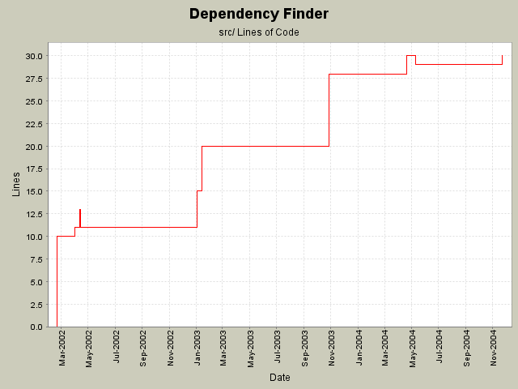

Summary Period: 2002-02-19 to 2004-11-23
[root]/src
 com
(0 files, 0 lines)
com
(0 files, 0 lines)
 jeantessier
(0 files, 0 lines)
jeantessier
(0 files, 0 lines)
 classreader
(75 files, 8797 lines)
classreader
(75 files, 8797 lines)
 commandline
(19 files, 1411 lines)
commandline
(19 files, 1411 lines)
 dependency
(47 files, 5780 lines)
dependency
(47 files, 5780 lines)
 doc-files
(3 files, 0 lines)
doc-files
(3 files, 0 lines)
 dependencyfinder
(3 files, 327 lines)
dependencyfinder
(3 files, 327 lines)
 ant
(13 files, 3654 lines)
ant
(13 files, 3654 lines)
 cli
(20 files, 4400 lines)
cli
(20 files, 4400 lines)
 gui
(30 files, 4083 lines)
gui
(30 files, 4083 lines)
 icons
(20 files, 0 lines)
icons
(20 files, 0 lines)
 diff
(29 files, 3687 lines)
diff
(29 files, 3687 lines)
 metrics
(29 files, 5104 lines)
metrics
(29 files, 5104 lines)
 doc-files
(2 files, 0 lines)
doc-files
(2 files, 0 lines)
 text
(2 files, 193 lines)
text
(2 files, 193 lines)

Total Lines Of Code:
30 (2006-01-04 08:56)
| Author | Changes | Lines of Code | Lines per Change |
|---|---|---|---|
| jeantessier | 12 (100.0%) | 58 (100.0%) | 4.8 |
Moved dependency-related metrics to Manual.
Renamed SymbolList to ListSymbols.
New ListSymbols Ant task.
5 lines of code changed in:
Remove DeprecationReport, use DependencyReporter instead.
0 lines of code changed in:
Track usage of deprecated APIs
2 lines of code changed in:
Define Ant tasks inside DependencyFinder.jar
8 lines of code changed in:
Update Log4J and ORO
4 lines of code changed in:
Use Chainsaw for viewing logs
16 lines of code changed in:
New default log directory
1 lines of code changed in:
Updated copyright notice
4 lines of code changed in:
Fixed DifferencesFactory
Renamed JarJarDiff-related XSL and batch files for post-processing
0 lines of code changed in:
List documented packages
Fix DiffToExternalHTML
Add full signature to Diff.dtd
2 lines of code changed in:
Reworked com.jeantessier.diff to use the Decorator pattern
6 lines of code changed in:
Figure out where to put log4j.properties
10 lines of code changed in:
Generated by StatCVS 0.2.2